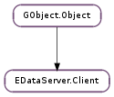

| Subclasses: | EBook.BookClient |
|---|
| static | error_create(code, custom_msg) |
| static | error_quark() |
| static | error_to_string(code) |
| static | util_copy_object_slist(copy_to, objects) |
| static | util_copy_string_slist(copy_to, strings) |
| static | util_free_object_slist(objects) |
| static | util_free_string_slist(strings) |
| static | util_parse_comma_strings(strings) |
| static | util_slist_to_strv(strings) |
| static | util_strv_to_slist(strv) |
| cancel_all() | |
| check_capability(capability) | |
| check_refresh_supported() | |
| get_backend_property(prop_name, cancellable, callback, *user_data) | |
| get_backend_property_finish(result) | |
| get_backend_property_sync(prop_name, cancellable) | |
| get_capabilities() | |
| get_source() | |
| is_online() | |
| is_opened() | |
| is_readonly() | |
| open(only_if_exists, cancellable, callback, *user_data) | |
| open_finish(result) | |
| open_sync(only_if_exists, cancellable) | |
| ref_main_context() | |
| refresh(cancellable, callback, *user_data) | |
| refresh_finish(result) | |
| refresh_sync(cancellable) | |
| remove(cancellable, callback, *user_data) | |
| remove_finish(result) | |
| remove_sync(cancellable) | |
| retrieve_capabilities(cancellable, callback, *user_data) | |
| retrieve_capabilities_finish(result) | |
| retrieve_capabilities_sync(cancellable) | |
| set_backend_property(prop_name, prop_value, cancellable, callback, *user_data) | |
| set_backend_property_finish(result) | |
| set_backend_property_sync(prop_name, prop_value, cancellable) |
| Name | Type | Flags | Description |
|---|---|---|---|
| capabilities | int | r | |
| main-context | GLib.MainContext | r | The main loop context on which to attach event sources |
| online | bool | r/w | |
| opened | bool | r | |
| readonly | bool | r | |
| source | EDataServer.Source | r/w/c |
| Name | Parameters | Return | Description |
|---|---|---|---|
| backend-died | |||
| backend-error | str | ||
| backend-property-changed | str, str | ||
| opened | GLib.Error |
| Name | Type | Access |
|---|---|---|
| parent | GObject.Object | r |
Bases: GObject.Object
Contains only private data that should be read and manipulated using the functions below.
| Parameters: |
|
|---|---|
| Returns: | a new GLib.Error containing an E_CLIENT_ERROR of the given code. If the custom_msg is None, then the error message is the one returned from EDataServer.Client.error_to_string () for the code, otherwise the given message is used. Returned pointer should be freed with GLib.Error.free (). |
| Return type: |
| Parameters: | code (EDataServer.ClientError) – |
|---|---|
| Return type: | str |
FIXME: Document me.
| Parameters: |
|
|---|---|
| Returns: | New head of copy_to. The returned pointer can be freed with EDataServer.Client.util_free_object_slist (). |
| Return type: |
Copies a GLib.SList of GObject.Object s to the end of copy_to.
| Parameters: |
|
|---|---|
| Returns: | New head of copy_to. The returned pointer can be freed with EDataServer.Client.util_free_string_slist (). |
| Return type: | [str] |
Copies the GLib.SList of strings to the end of copy_to.
| Parameters: | objects ([GObject.Object]) – a GLib.SList of GObject.Object s |
|---|
Calls GObject.Object.unref () on each member of objects and then frees objects itself.
| Parameters: | strings ([str]) – a GLib.SList of strings (str *) |
|---|
Frees memory previously allocated by EDataServer.Client.util_strv_to_slist ().
| Parameters: | strings (str) – string of comma-separated values |
|---|---|
| Returns: | Newly allocated GLib.SList of newly allocated strings corresponding to values parsed from strings. Free the returned pointer with EDataServer.Client.util_free_string_slist (). |
| Return type: | [str] |
Parses comma-separated list of values into GLib.SList.
| Parameters: | strings ([str]) – a GLib.SList of strings (const str *) |
|---|---|
| Returns: | Newly allocated None-terminated array of strings. The returned pointer should be freed with GLib.strfreev (). Note: Paired function for this is EDataServer.Client.util_strv_to_slist (). |
| Return type: | [str] |
Convert a list of strings into a None-terminated array of strings.
| Parameters: | strv (str) – a None-terminated array of strings (const str *) |
|---|---|
| Returns: | Newly allocated GLib.SList of newly allocated strings. The returned pointer should be freed with EDataServer.Client.util_free_string_slist (). Note: Paired function for this is EDataServer.Client.util_slist_to_strv (). |
| Return type: | [str] |
Convert a None-terminated array of strings to a list of strings.
Cancels all pending operations started on client.
| Parameters: | capability (str) – a capability |
|---|---|
| Returns: | GLib.SList of const strings of capabilities |
| Return type: | bool |
Check if backend supports particular capability. To get all capabilities use EDataServer.Client.get_capabilities ().
| Returns: | True if the client supports refreshing, False otherwise. |
|---|---|
| Return type: | bool |
Checks whether a client supports explicit refreshing (see EDataServer.Client.refresh ()).
| Parameters: |
|
|---|
Queries client ‘s backend for a property of name prop_name. The call is finished by EDataServer.Client.get_backend_property_finish () from the callback.
| Parameters: | result (Gio.AsyncResult) – a Gio.AsyncResult |
|---|---|
| Raises: | GLib.GError |
| Returns: | True if successful, False otherwise. |
| Return type: | bool, prop_value: str |
Finishes previous call of EDataServer.Client.get_backend_property ().
| Parameters: |
|
|---|---|
| Raises: | |
| Returns: | |
| Return type: |
Queries client ‘s backend for a property of name prop_name.
| Returns: | GLib.SList of const strings of capabilities |
|---|---|
| Return type: | [str] |
Get list of strings with capabilities advertised by a backend. This list, together with inner strings, is owned by the client. To check for individual capabilities use EDataServer.Client.check_capability ().
| Returns: | The source. |
|---|---|
| Return type: | EDataServer.Source |
Get the EDataServer.Source that this client has assigned.
| Returns: | True if this client is connected, otherwise False. |
|---|---|
| Return type: | bool |
Check if this client is connected.
| Returns: | always True |
|---|---|
| Return type: | bool |
Check if this client is fully opened. This includes everything from EDataServer.Client.open () call up to the authentication, if required by a backend. Client cannot do any other operation during the opening phase except of authenticate or cancel it. Every other operation results in an EDataServer.ClientError.BUSY error.
| Returns: | True if this client is read-only, otherwise False. |
|---|---|
| Return type: | bool |
Check if this client is read-only.
| Parameters: |
|
|---|
Opens the client, making it ready for queries and other operations. The call is finished by EDataServer.Client.open_finish () from the callback.
| Parameters: | result (Gio.AsyncResult) – a Gio.AsyncResult |
|---|---|
| Raises: | GLib.GError |
| Returns: | True if successful, False otherwise. |
| Return type: | bool |
Finishes previous call of EDataServer.Client.open ().
| Parameters: |
|
|---|---|
| Raises: | |
| Returns: | |
| Return type: |
Opens the client, making it ready for queries and other operations.
| Returns: | a GLib.MainContext |
|---|---|
| Return type: | GLib.MainContext |
Returns the GLib.MainContext on which event sources for client are to be attached.
The returned GLib.MainContext is referenced for thread-safety and must be unreferenced with GLib.MainContext.unref () when finished with it.
| Parameters: |
|
|---|
Initiates refresh on the client. Finishing the method doesn’t mean that the refresh is done, backend only notifies whether it started refreshing or not. Use EDataServer.Client.check_refresh_supported () to check whether the backend supports this method. The call is finished by EDataServer.Client.refresh_finish () from the callback.
| Parameters: | result (Gio.AsyncResult) – a Gio.AsyncResult |
|---|---|
| Raises: | GLib.GError |
| Returns: | True if successful, False otherwise. |
| Return type: | bool |
Finishes previous call of EDataServer.Client.refresh ().
| Parameters: | cancellable (Gio.Cancellable or None) – a Gio.Cancellable ; can be None |
|---|---|
| Raises: | GLib.GError |
| Returns: | True if successful, False otherwise. |
| Return type: | bool |
Initiates refresh on the client. Finishing the method doesn’t mean that the refresh is done, backend only notifies whether it started refreshing or not. Use EDataServer.Client.check_refresh_supported () to check whether the backend supports this method.
| Parameters: |
|
|---|
Removes the backing data for this EDataServer.Client. For example, with the file backend this deletes the database file. You cannot get it back! The call is finished by EDataServer.Client.remove_finish () from the callback.
| Parameters: | result (Gio.AsyncResult) – a Gio.AsyncResult |
|---|---|
| Raises: | GLib.GError |
| Returns: | True if successful, False otherwise. |
| Return type: | bool |
Finishes previous call of EDataServer.Client.remove ().
| Parameters: | cancellable (Gio.Cancellable or None) – a Gio.Cancellable ; can be None |
|---|---|
| Raises: | GLib.GError |
| Returns: | True if successful, False otherwise. |
| Return type: | bool |
Removes the backing data for this EDataServer.Client. For example, with the file backend this deletes the database file. You cannot get it back!
| Parameters: |
|
|---|
Initiates retrieval of capabilities on the client. This is usually required only once, after the client is opened. The returned value is cached and any subsequent call of EDataServer.Client.get_capabilities () and EDataServer.Client.check_capability () is using the cached value. The call is finished by EDataServer.Client.retrieve_capabilities_finish () from the callback.
| Parameters: | result (Gio.AsyncResult) – a Gio.AsyncResult |
|---|---|
| Raises: | GLib.GError |
| Returns: | True if successful, False otherwise. |
| Return type: | bool, capabilities: str |
Finishes previous call of EDataServer.Client.retrieve_capabilities (). Returned value of capabilities should be freed with GLib.free (), when no longer needed.
| Parameters: | cancellable (Gio.Cancellable or None) – a Gio.Cancellable ; can be None |
|---|---|
| Raises: | GLib.GError |
| Returns: | True if successful, False otherwise. |
| Return type: | bool, capabilities: str |
Initiates retrieval of capabilities on the client. This is usually required only once, after the client is opened. The returned value is cached and any subsequent call of EDataServer.Client.get_capabilities () and EDataServer.Client.check_capability () is using the cached value. Returned value of capabilities should be freed with GLib.free (), when no longer needed.
| Parameters: |
|
|---|
Sets client ‘s backend property of name prop_name to value prop_value. The call is finished by EDataServer.Client.set_backend_property_finish () from the callback.
| Parameters: | result (Gio.AsyncResult) – a Gio.AsyncResult |
|---|---|
| Raises: | GLib.GError |
| Returns: | True if successful, False otherwise. |
| Return type: | bool |
Finishes previous call of EDataServer.Client.set_backend_property ().
| Parameters: |
|
|---|---|
| Raises: | |
| Returns: | |
| Return type: |
Sets client ‘s backend property of name prop_name to value prop_value.